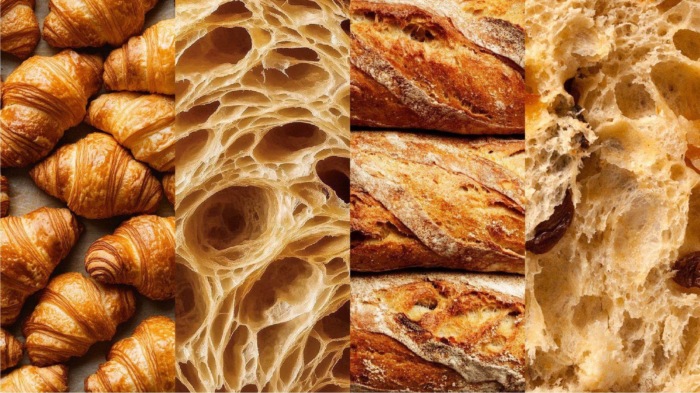
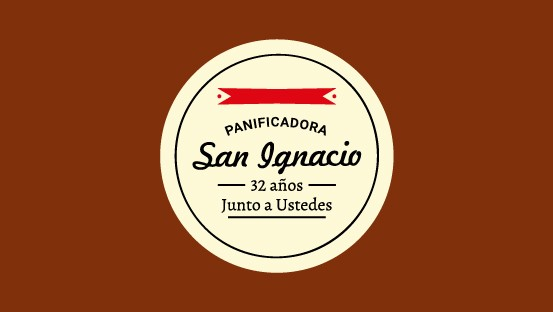
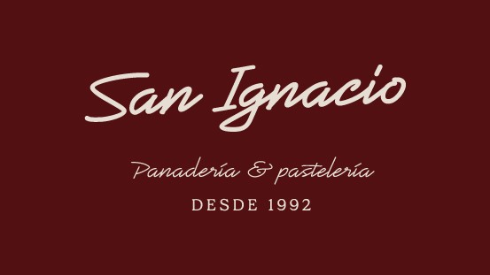
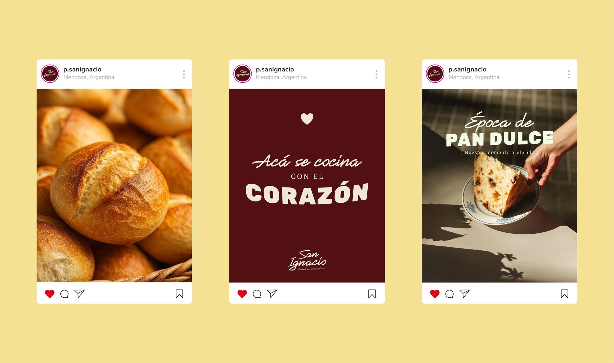
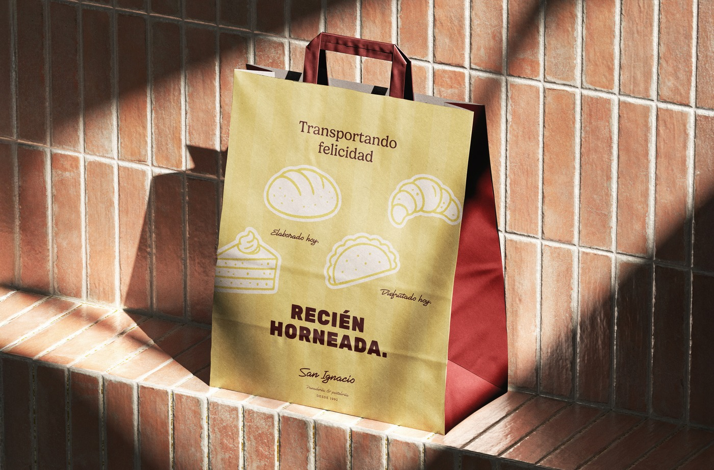
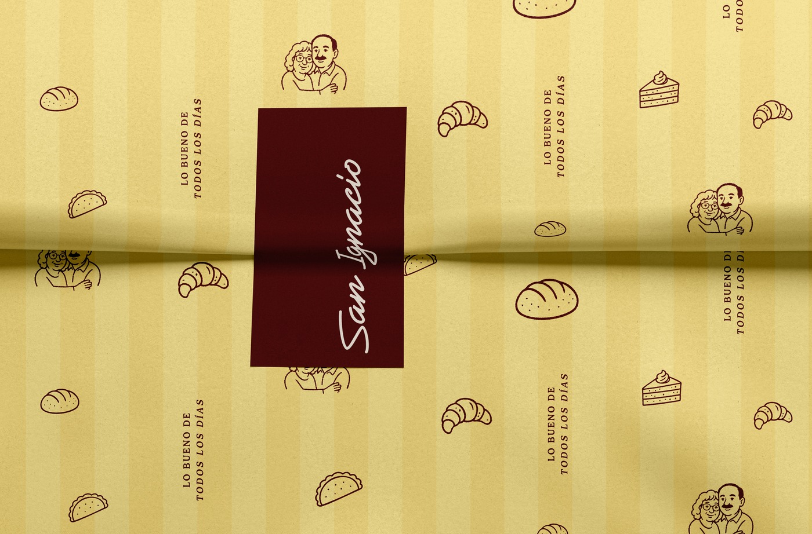
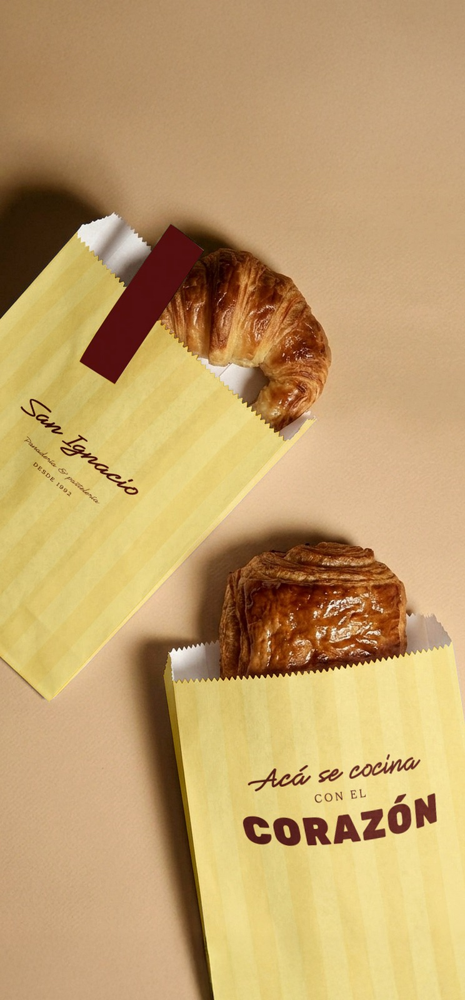
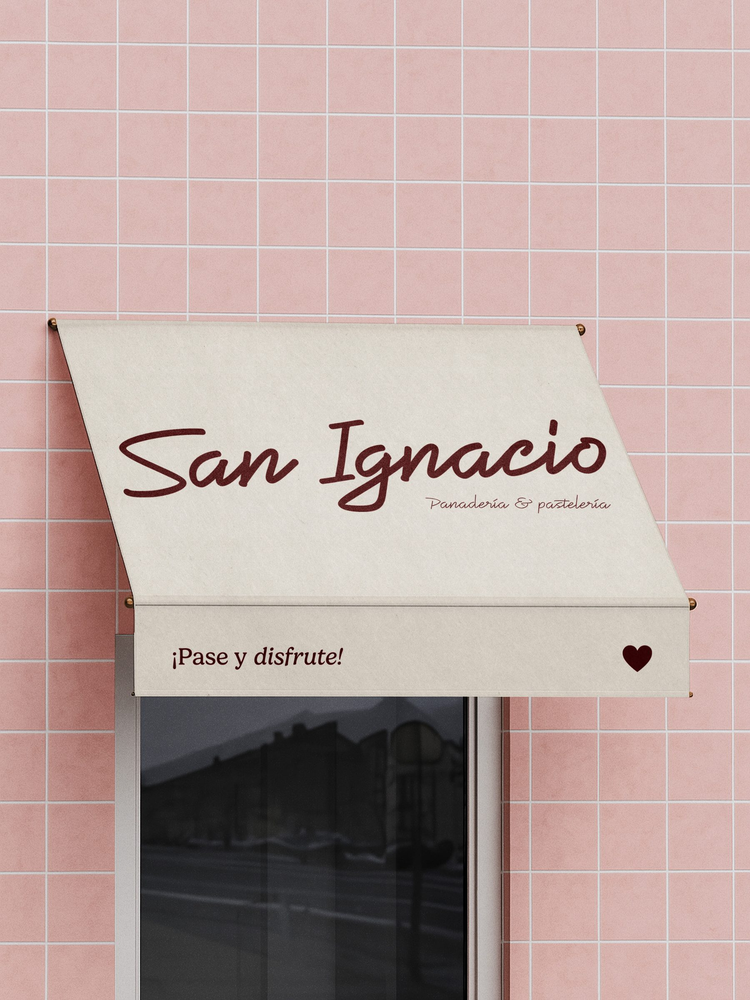
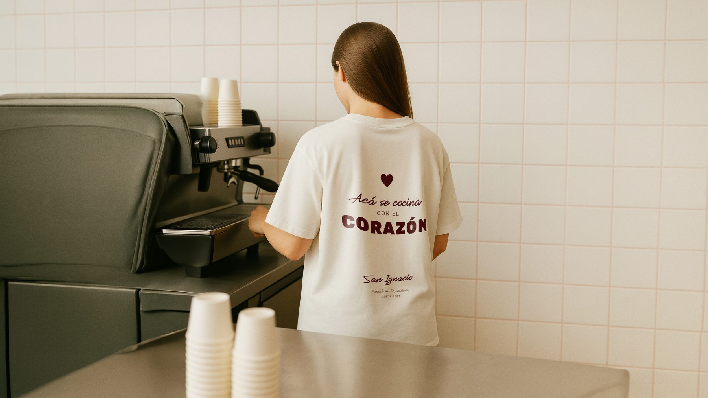

Panadería San Ignacio
Rebranding conceptual de una panadería real con más de 30 años de historia, actualizando su identidad sin perder la calidez que la define.
El proyecto
San Ignacio es una panadería y pastelería real, fundada en 1992 y con más de 30 años de trayectoria en Mendoza, reconocida por su producción artesanal y la atención cercana de sus dueños.
Este proyecto es un ejercicio personal de rebranding, pensado para actualizar su identidad visual sin perder lo que la hizo reconocible durante tres décadas. Aunque San Ignacio es un negocio real, esta identidad visual es una exploración conceptual y no ha sido aplicada comercialmente.

Proceso

Análisis
El proyecto consiste en un proceso de rebranding que busca actualizar la identidad visual, manteniendo los elementos que forman parte de su reconocimiento histórico: el uso del color y el estilo manuscrito del logotipo.

Propuesta
A partir del análisis de la marca original, se desarrolló una nueva versión del logotipo que responde a una estética más contemporánea, sin perder su esencia. La propuesta se completa con una ampliación de la paleta cromática, una selección tipográfica contrastante y la incorporación de recursos gráficos.

Sistema
El sistema se completó ampliando la paleta original a tonos más contemporáneos, sumando una tipografía de bloque que contrasta con el estilo manuscrito del logotipo, y un set de ilustraciones simples que funcionan como recurso gráfico propio en redes y piezas de comunicación.
El packaging en detalle



El packaging retoma el amarillo cálido y la tipografía manuscrita que identifican a San Ignacio desde 1992, y le suma una capa nueva: ilustraciones simples de sus productos que funcionan como lenguaje propio. El sistema contempla cuatro soportes distintos: la caja, para tortas y productos que piden una presentación más cuidada; la bolsa grande, pensada para el pan de todos los días, resistente y de uso rápido en el mostrador; la bolsa chica, para facturas y piezas individuales; y el papel para envolver, que protege directamente la pastelería más delicada. Cada soporte responde a un momento distinto de la compra — pero todos comparten la misma identidad, para que la marca se reconozca en cualquier etapa de la experiencia, del mostrador a la casa.
Herramientas
Galería
Piezas del sistema de marca: logo, paleta, tipografía y aplicaciones.


¿Te gustaría algo así para tu marca? Hablemos ↗